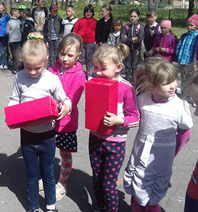

Архів новин Сколобівської школи
Подяка від П. Дзюблика
Пройшли підсумки еко-квесту "Наше Полісся - чисте Полісся", де народний депутат України П. Дзюблик вручив подяку Сколобівській школі
Детальніше...День вишиванки
16 травня наші учні та вчителі прийняли участь у всеукраїнському дні вишиванки.
Детальніше...День примирення
8 травня вчителі Сколобівської школи організували концерт до дня примирення.
Детальніше...Спортивний майданчик для школи
За сприяння народного депутата України П. Дзюблика на території Сколобівської ЗОШ було встановлено спортивний майданчик
Детальніше...
Подарунки для дітей
25 квітня церква ЄХБ подарувала для наших дітей чудові подарунки. Дякуємо!!!
Детальніше...